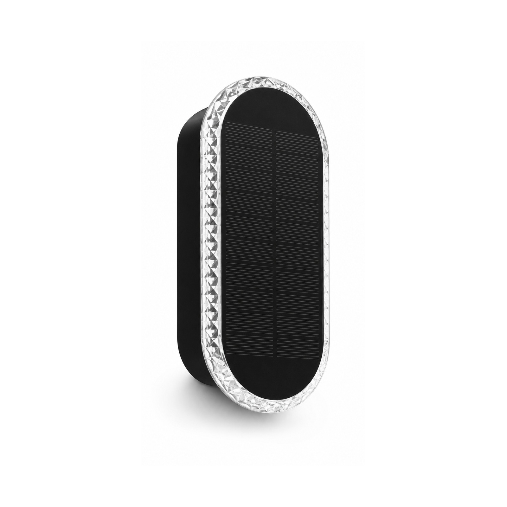

Aplique Solar Arriba-Abajo
Un aplique de doble haz que proyecta luz arriba y abajo de una fachada: 2×3W, IP65, cuerpo de aluminio y luz cálida 3000K, en negro, blanco o gris.

Mientras el resto de la gama prioriza la potencia de seguridad, este equipo apuesta por el estilo arquitectónico con un plus de seguridad. Los dobles haces rozan la superficie del muro para dar profundidad de noche en fachadas, pilares, villas y hoteles boutique. El cuerpo de aluminio y tres acabados lo hacen una elección premium, y al ser solar no hay cableado que recorrer.
Especificaciones
| Potencia | 2×3W (doble haz, arriba + abajo) |
|---|---|
| Grado IP | IP65 — a prueba de polvo y chorros de agua |
| Cuerpo | Aluminio inyectado |
| Temperatura de color | 3000K blanco cálido |
| Autonomía | 10 horas por carga |
| Acabados | Negro / blanco / gris |
| Batería | LiFePO4 |
| Certificación | CE + RoHS |
Por qué lo eligen los compradores
Aspecto arquitectónico. El baño arriba/abajo se percibe como diseño premium: ideal para villas, hoteles y residencial de gama alta.
Durabilidad de aluminio. Cuerpo inyectado resistente a la corrosión y los UV durante años.
Tres acabados. Negro, blanco y gris cubren la mayoría de paletas desde una sola familia de producto.
Certificado y listo para OEM. CE + RoHS con cada cotización; acabados y marca personalizados.